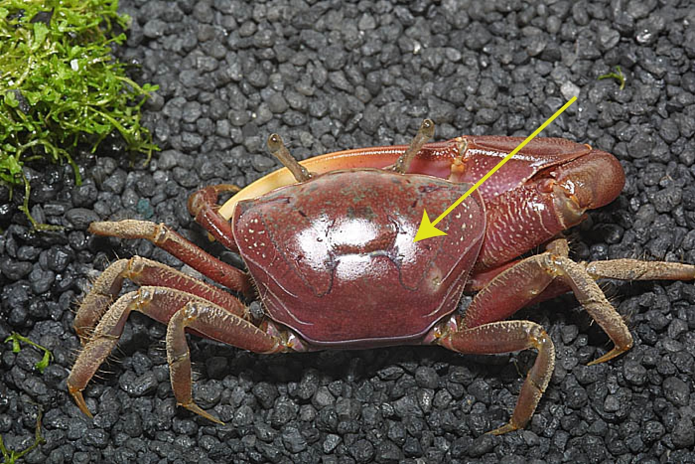
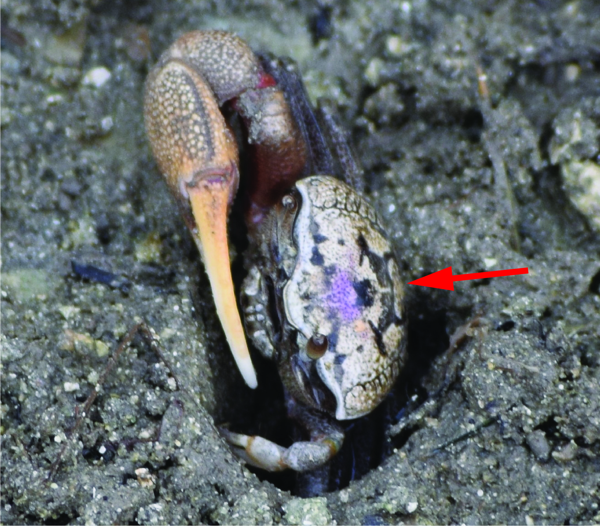
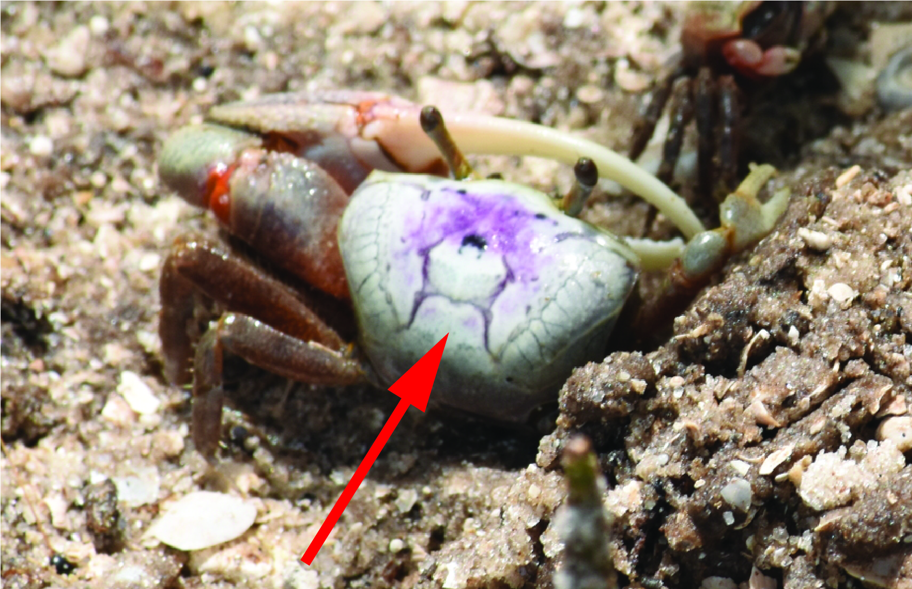
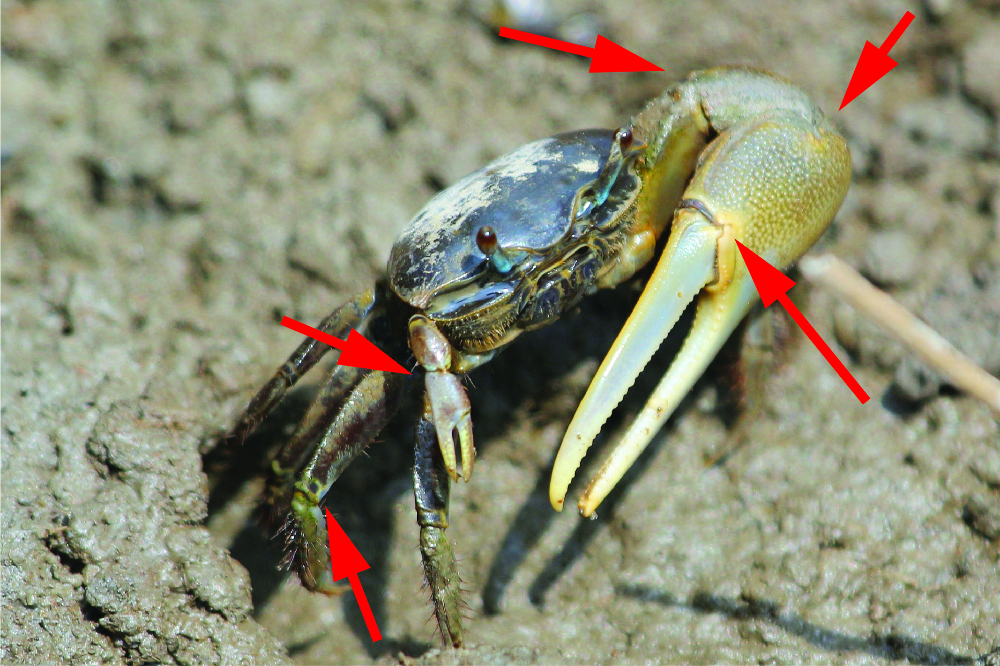
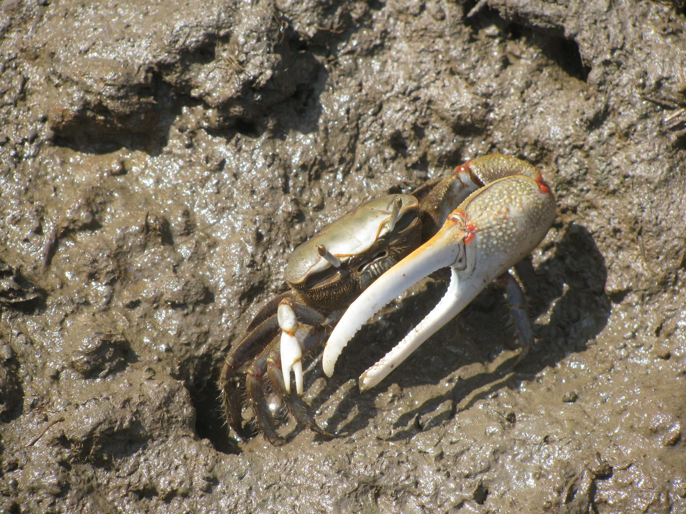

a. Claws are asymmetric, with one very large and one small (male). — Go to 2 Male fiddler crab with asymmetric claws
b. Claws are small and symmetric (female). — ♀ Female Minuca minax, ♀ Female Leptuca pugilator, or ♀ Female Minuca pugnax Female fiddler crab with small symmetric claws
a. Carapace is predominantly a solid single color. H-groove is same color as (or not distinct from) the rest of the carapace [footnote 1]. — Go to 3 Carapace predominantly a single solid colorH-groove is similar color to carapace
b. Carapace is a mix of multiple colors (including blotches, stripes, or spots). H-groove is silver-gray [footnote 1]. — ♂ Male Leptuca pugilator Carapace multiple colorsH-groove is silver-grayH-groove is silver-gray
a. Carapace is predominantly medium-to-dark blue [footnote 2]. Limb joints have no distinctive red markings. Eyestalks appear gray-to-pale blue. — ♂ Male Minuca pugnax Medium-to-dark blue carapaceMedium-to-dark blue carapaceJoints lack distinctive red markings
b. Carapace is predominantly silvery-gray to gray-tan [footnote 2]. Limb joints (including claws and walking legs) have distinctive reddish markings. Eyestalks appear white/gray, sometimes with a hint of orange. — ♂ Male Minuca minax Silver-tan carapaceRed markings on joints of claw and limb